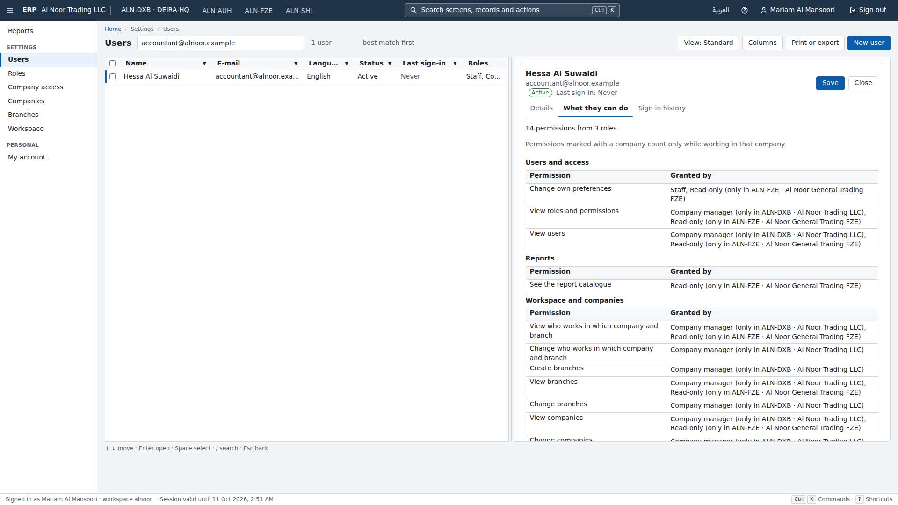
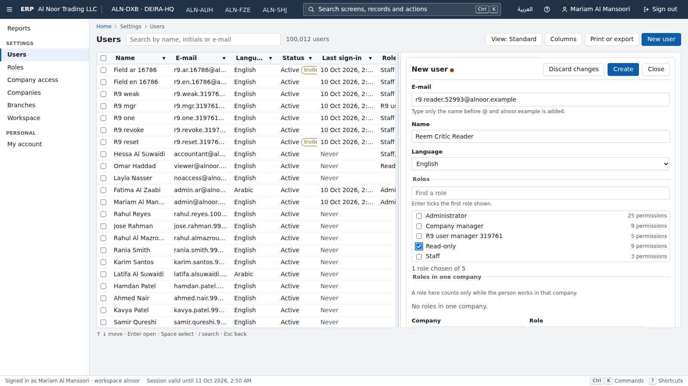
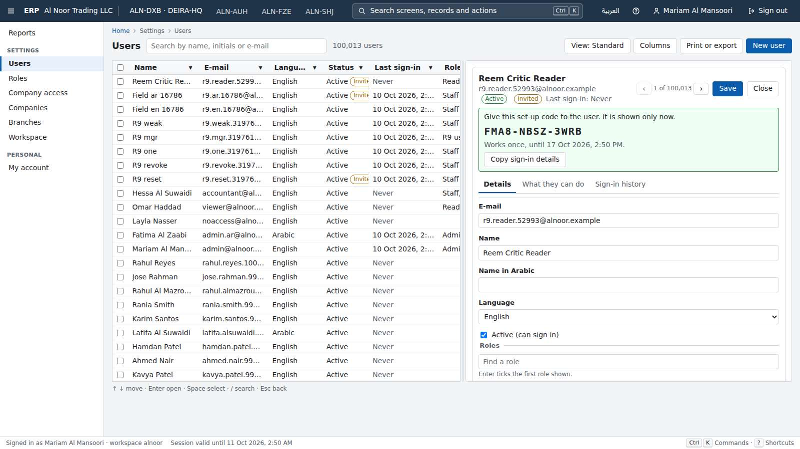
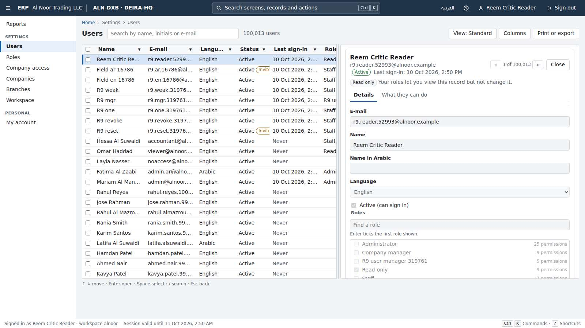
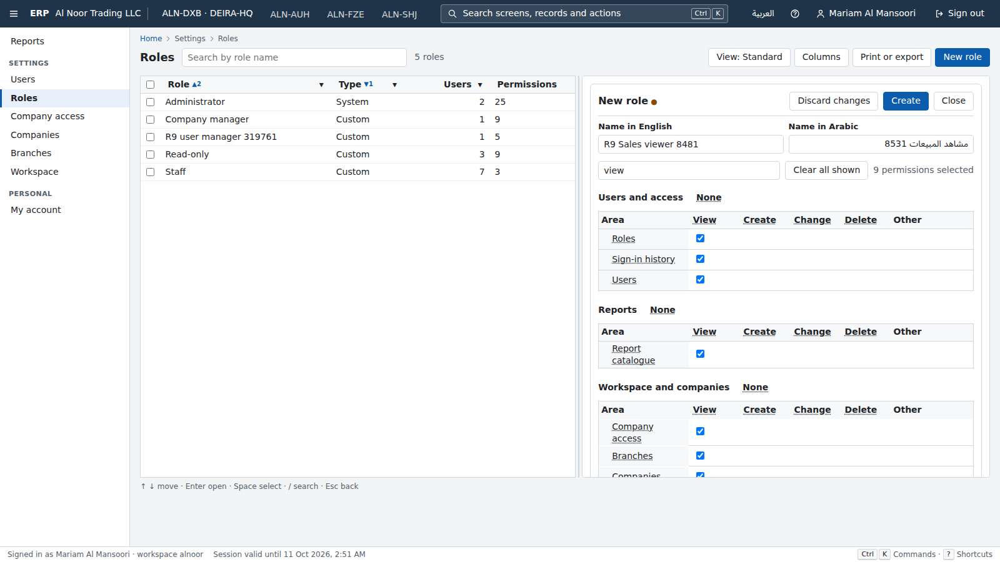
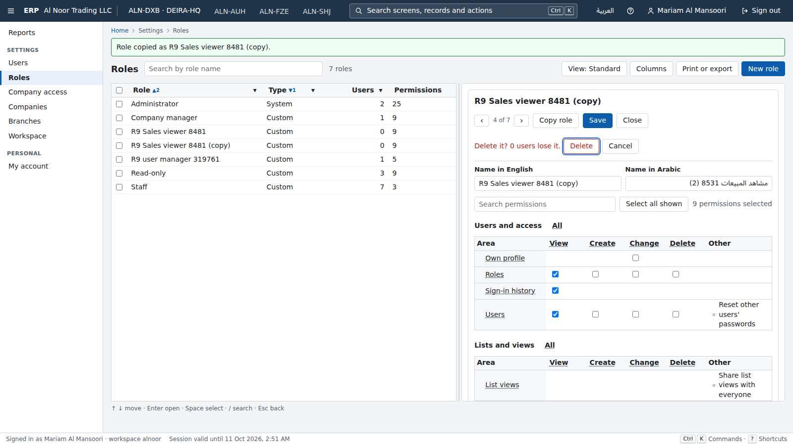
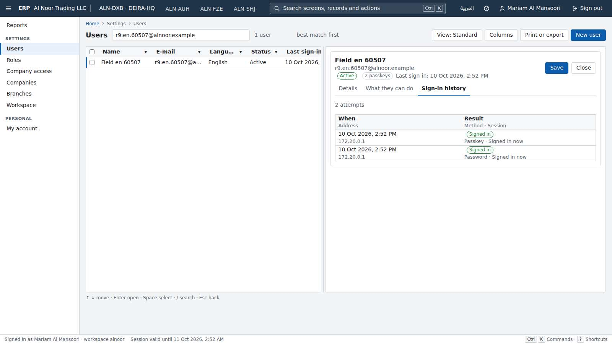
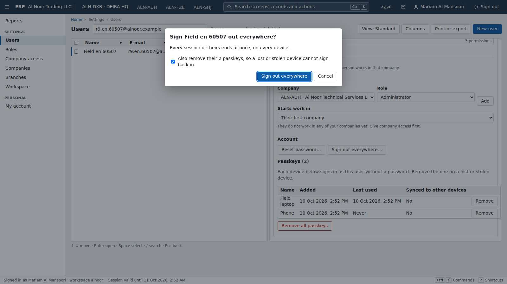

Gauntlet progress
Platform core, judged piece by piece against the owner's bar and Odoo Community. Rebuilt from gauntlet/verdicts/ by gauntlet/tools/record.mjs. Full evidence in ledger.md; owner items in needs-human.md.
Foundation and hard gates
Wave 0 · 9 rounds judgedEvery module that posts foreign-currency amounts (purchases in USD or EUR, the everyday case for a UAE trading company) will build on the kernel Money type. docs/compliance/vat-rounding-and-currency.md rule 2, signed off by the owner, says: 'Rounding happens once, on the figure that is stated. Lines and tax-category subtotals keep their full precision; the invoice total is rounded to 2 decimals.' The kernel breaks this in two ways. (a) Money.Create rounds each base amount to the fils, and Money.Add sums those rounded amounts (BaseAmount + other.BaseAmount). Example: three lines of USD 1.00 at 3.6725 give 3.67 + 3.67 + 3.67 = AED 11.01, but the rule gives 11.0175, rounded to 11.02. (b) Money.Create throws on any amount with more decimals than the currency's minor units, so a line cannot keep full precision at all. Round 9 reported this and it is still open (round 10 only factored out RoundToMinorUnits). Fix in the kernel before p08 and the ledger build on it: keep line and subtotal base amounts at full precision (or carry the unrounded product), round only the stated total, and have the type report the rounding difference that e-invoices put in 'Rounding Amount'. This is a rule already signed off, so implementing it needs no new human gate.
- G3 clean clone: ./erp verify (build, migrate, seed, every test) PASS — Fresh clone of c4cfacb at /home/shan/critic/p00-foundation-r10. Command: ERP_PROJECT=c-p00-foundation-r10 ERP_HTTP_PORT=20050 ERP_DB_PORT=20051 ERP_VERIFY_HTTP_PORT=20060 ERP_VERIFY_DB_PORT=20061 verify-slot.sh ./erp verify. It took slot 1 at 2026-10-16T20:44:29Z after waiting 0 s and ended 'verify passed in 3983 s'. Stages: dotnet 3396 s, web 2038 s, e2e 3926 s, timing 54 s. 'Ratchet check passed.' Processor time was 9,512 s against the 10,500 s maximum (dotnet 7516, web 1713, e2e 247, timing 37). Wall time was not judged because the machine was busy (load up to 95). Log: verify-critic-p00-foundation-r10.log.
- G3 clean clone: ./erp up (running seeded demo) PASS — ERP_PROJECT=c-p00-foundation-r10 ERP_HTTP_PORT=20050 ERP_DB_PORT=20051 ./erp up served http://localhost:20050 in 77 s (78 s wall) while a verify ran beside it. It seeded alnoor with 100,005 users in 44.6 s, plus gulfsteel (1,005 users), and printed the demo sign-ins. The port and project overrides were honoured (erp-up.log). ./erp tenant create made the empty Arabic workspace emptyco in 7.6 s (tenant-create.txt).
- G1 tenant isolation: critic's live attack (API, documented query parameters, Bearer, exports, files, side channels, DB role) PASS — attack/attack.mjs (the r9 critic's script, logic unchanged) ran as the alnoor admin (A) against gulfsteel (B). B first made a canary user, 10 saved views, a company logo, 5 roles and 5 users. A then sent 109 operations with B's ids, 686 documented query-parameter requests, 465 tenant-switch requests, 100 export requests and 35 filter requests. Result: LEAKS 0. No id appeared in both tenants' answers. B's per-table md5 checksums were unchanged. A's list totals did not move when B wrote. Probing other carriers (attack/carriers.txt) with ?access_token, ?token, ?erp_session, X-Api-Key, X-Erp-Session, 'Authorization: Token' and 'Authorization: Basic' all answered 401. DB role (db-roles-rls.txt, db-app-role-attack.txt): erp_app is not superuser, has no BYPASSRLS and is a member of nothing. All 17 tenant tables have RLS enabled and forced, owned by erp_owner. With no tenant bound, erp_app sees 0 rows. It is refused on sign_in_secret and the migration history, on ALTER TABLE ... DISABLE ROW LEVEL SECURITY, and on pg_class, pg_stat_user_tables and pg_stats. That closes round 9's reltuples finding.
- G1 tenant isolation: the gate catches a leak planted in p00's kernel PASS — Plant L5 (plants/plants.diff) puts list totals in kernel ListBinding.QueryAsync into a 120 s spill file under the temp folder. The file is keyed by list, search and filter, with no tenant. This is new storage outside process memory. CAUGHT live by G1HttpIsolationTests.Tenant_A_cannot_reach_tenant_B_through_any_endpoint: '5708 list answers that are not the asking tenant's own ... GET /api/tenancy/companies?take=50 answered total 49, but walking the same query returns 26 rows' (plants/plant-L5.log, G1 suite 28.5 min).
- G2 permissions: deny by default, and the gate catches unchecked actions planted in p00's kernel PASS — P5 adds a new carrier and a bypass: the kernel also reads the session token from ?access_token= on GET, and PermissionAuthorizationHandler passes any GET that carries it. The plant is live: CriticR10Proof saw a no-roles user's GET /api/identity/users answer 200, and the test passes without the plant (plant-P5PROOF.log, plant-P5NONE.log). It was CAUGHT by G2PermissionTests.Sessions_are_read_only_through_the_listed_carriers_and_each_has_a_working_test_client: 'A session token sent as query access_token was honoured' (plant-P5.log). P4 keeps each session's scoped permissions for 60 s in a static dictionary in SessionAuthenticationHandler. It was CAUGHT statically by G1ProcessStateTests and live by G2CompanyRoleTests (2 tests) and G2ReportDataTests (2 tests) (plant-P4.log). Round 9's gap is closed: the carrier matrices now run per carrier, and The_carrier_matrices_catch_a_permission_bypass_for_bearer_callers passes. Live product: the no-roles user sees no menu and gets 403 from the API.
- Rule gates (licences, no float money, EN/AR parity, audit coverage) and the ratchet PASS — These run inside ./erp verify, which passed with 'Ratchet check passed.'. Against r9's 99e596b, gauntlet/ratchet.json removed no key and lowered no value: dotnetTests 583 to 602, webUnitTests 438 to 450, e2eTests 95 to 100, and 4 keys were added (g2.credentialCarriers 2, g2.takeoverQuery*). The database has no real, double precision or money columns. OpenAPI lists 112 operations, the same as rounds 8 and 9.
1531 / 1531 passed
0 failed · 0 skipped · 3983s
Clean clone → demo: PASS in 3983s
| Task | Ours | Odoo | Winner |
|---|---|---|---|
| sign-in (sign in to an empty workspace) | 1 · 0 · 0.102s · 2.03s | 2 · 0 · 1.606s · 4.68s | ours |


Round 10 · judged 2026-10-16T23:29:56Z · commit c4cfacb593
Odoo reference rig and blind comparison harness
Wave 0 · 8 rounds judgedRound 10 requires that a task which saves sends one of its declared writes during the measured part. It also requires that every entered value its end state gained was 'typed, picked as a file, or sent in one of its writes'. Both rules look at what the browser page sent, not at what a counted step caused. So set-up, which may write to the product before the clock, can leave the work for the product's own page code: - a server-side draft holding the value, which the start screen offers to save with one click (R1: 1 step, 0 keys), or - a setting that makes the start page send the declared write from a timer (R2, and R3 for an entered value: 1 step, 1 key). The start-screen check looks only at field values, so a value shown as text ('Draft restored: abcdefghij') passes. This is the same off-the-clock class as r9's Q1, Q2 and round 10's Q3/Q3c, moved from the back end into the page. Possible fixes: (a) For a browser task, an entered value counts as entered only when the measured part typed it, picked it as a file, or chose it on screen. Its mere presence in a request body the page composed does not count. (b) The declared write must be caused by a counted step. Read Chromium's request initiator (CDP Network.requestWillBeSent initiator stack or user activation), or require the write to start while a step is being performed or settled, never from a timer. (c) The start-screen check reads the screen's text, not only its fields, for entered values. (d) Refuse a set-up write whose body carries an entered value. Add R1-R3 as self-tests and mutations.
- Instrument integrity: the harness catches faults planted in the measuring instrument (this piece's surface) FAIL — Plants are in plants/zz-critic-r10.test.mjs, with the log in plants/critic-r10-plants.log. Both controls hold: C1, an honest typed save, verifies at 3 steps and 10 keys, and C2, an honest approval, verifies. Three plants are MISSED. Each is recorded as 'verified' and beats an honest 3-step, 10-key path ('win'). - R1: set-up stores the entered value as a server-side draft with one API write before the clock. The start screen shows the draft as text, not in a field, and offers 'Save draft'. run() clicks it once. Result: verified, 1 step, 0 keys, 0.107 s, end_state_gained ['abcdefghij'], writes_sent ['POST /api/save']. The value counts as entered by the measured part because the page's write body carries it, but nobody typed it. - R2: set-up turns on a product setting through the API. The start page then sends the declared write, POST /api/approve, from its own timer 3 s after it opens. run() presses Escape and waits. Result: verified, 1 step, 1 key. This is round 10's Q3c (a job set-up scheduled) with the job moved into the page: 'the measured part sent the declared write' is satisfied by a write that no counted step caused. - R3: R1 and R2 together. The stashed value is autosaved by the start page's timer, and run() presses Escape. Result: verified, 1 step, 1 key, a 10-character entered value never typed. The round-10 defences themselves hold where they were aimed: the builder's Q1-Q3c, X12 and X16 plants pass, all 53 instrument mutations are caught in verify, and my R5 (set-up's save aborted by the page while the product still carries it out) is refused as abandoned. Of my two extra mutations of the set-up watcher, X2 (the page-close handler removed) is caught by plant Q2d. X1 (the request-failed path removed) is missed by set-up-off-clock.test.mjs, but later layers still refuse R5, so it is defence in depth only.
- G3 clean clone (one command: build, migrate, seed, all tests; one command: running seeded demo) PASS — I ran a fresh clone at c43966c with ERP_PROJECT=c-p01-odoo-rig-r10 and ports 20150/20151/20160/20161, through verify-slot.sh. Run 1 (slot taken 11:16:01Z) had every test green: .NET 550, web unit 392, e2e 89, compare 373, 53 of 53 mutations caught, and the ratchet minimums met. It still exited 1, because the wall-time check judged the machine quiet: '4283 s on a quiet machine (load 0.28 at the start and 4.76 at the end)'. In fact another critic's verify ran beside it, and I measured load 68-74 mid-run. Processor time was 10,402 s against the 10,500 s maximum (verify-critic-p01-odoo-rig-r10.log, verify-run1-failed/). Run 2 on a quieter machine (slot taken 12:28:04Z) printed 'verify passed in 2916 s', rc=0, with processor time 8,741 s and the same counts; every built ours driver verified in the health check, and 'Ratchet check passed' (verify-critic-p01-odoo-rig-r10-run2.log). './erp up' with ERP_SEED_USERS_CSV returned rc=0 in 124 s (up-shared-dataset.log).
- G1 tenant isolation (product as built) PASS — Every G1 gate test passed in verify. HTTP (attack/http-attack.py and http-attack.out, adapted from the r9 critic's tool): signed in as the alnoor admin, I sent 1,016 requests over every documented operation. They used gulfsteel's user, role, company, branch and tenant ids in paths, report and export parameters (csv/xlsx/pdf), search and tenantId, plus three tenant-switch headers. Result: 0 leaks and 0 writes on B ids accepted. Sanity probes (attack/sanity.out): A reading B's company gets 404, while each reads its own with 200. Database (db-attack.txt): all 17 tables with tenant_id have RLS enabled and forced, and erp_app, erp_auth and erp_owner are neither superuser nor BYPASSRLS. erp_app with no tenant context sees 0 rows. In tenant A it sees 100,005 users, 0 of them B's; an UPDATE of B's companies touches 0 rows, and an INSERT with B's tenant_id violates the policy.
- G2 permissions (product as built) PASS — Every G2 gate test and on-screen permission plant self-test passed in verify. A spot check of the noaccess user returned 403 on users, companies and roles, and on creating a user (attack/sanity.out). p01 adds no product endpoint.
- Rule gates (licence, float money, EN/AR strings, audit, OpenAPI, ratchet) PASS — All pass in verify run 2, and the ratchet check passed. Counts .NET 550, web 392, e2e 89, compare 373 and mutations 53 are all at or above round 9's 541/373/85/352/41. The harness dependencies are still playwright-core and acorn, under the licence check.
1404 / 1404 passed
0 failed · 0 skipped · 2916s
Clean clone → demo: PASS in 2916s
| Task | Ours | Odoo | Winner |
|---|---|---|---|
| api-update-user (p15) | 2 · 249 · 0.048s · 72.82s | 2 · 184 · 0.46s · 54.62s | odoo |
| edit-and-save (p06) | 3 · 18 · 0.205s · 8.09s | 4 · 19 · 0.383s · 10.28s | ours |
| find-user (p03) | 3 · 3 · 0.622s · 8.29s | 6 · 5 · 1.651s · 10.35s | ours |
| sign-in (p00) | 1 · 0 · 0.03s · 2.03s | 2 · 0 · 0.645s · 4.68s | ours |
| create-restricted-user (named; p03) | 5 · 37 · 1.034s · 20.91s | 10 · 46 · 8.219s · 30.05s | ours |
| switch-to-arabic (named; p04) | 1 · 0 · 0.094s · 2.65s | 6 · 1 · 1.923s · 15.28s | ours |
| reach-screen-keyboard (p04) | 2 · 3 · 0.124s · 3.94s | 3 · 8 · 0.534s · 3.99s | ours |
| create-company-branch (p02) | 6 · 49 · 0.703s · 22.17s | 12 · 72 · 3.361s · 48.53s | ours |
| switch-company (p02) | 1 · 0 · 0.089s · 2.65s | 2 · 0 · 0.32s · 5.3s | ours |
| arabic-report (p06) | 2 · 0 · 0.124s · 5.3s | 6 · 0 · 4.905s · 15.9s | ours |
| print-list-arabic (p06) | 3 · 13 · 0.445s · 11.09s | 5 · 32 · 4.858s · 19.06s | ours |
| find-record, custom-field-filter, import-5000, follow-approval, add-rate, attach-file, configure-sequence, export-filtered-list, keyboard-navigation, see-and-rerun-job, who-changed-field | – | – | not-compared |
Round 10 · judged 2026-10-10T13:17:01Z · commit c43966c
Tenants, companies and branches
Wave 1 · 7 rounds judgedRound 7's gap (New and Code offered to an administrator of some companies) and round 8's gap (PU, a default-company change for a user who also works elsewhere) are both closed. On the real build, New, Alt+N, ?open=new and the palette are absent for a one-company and a one-branch administrator, and Code is read-only with its reason (walk-limited.log, shots 04 and 05). PU is caught by the new contract test, and PU2 by both the contract test and G2AccountTakeover. The remaining fault is in CompaniesPage.useEveryCompany. It decides 'works in every company' from the first row of GET /api/tenancy/companies?take=1, and it is right only because of `page.items.length > 0 &&`. screens.test.tsx always serves one company row, so it never models a user whose list is empty. The natural rewrite `page.items[0]?.everyCompany !== false` turns an empty list into 'every company'. That state is not exotic: a user created with the Administrator role has no company access until someone grants it, and an administrator of one company can remove someone's last company. Such a user sees New on Companies, fills the form, and is refused on save. That is the same dead-end class as round 7, for the first screen a newly invited finance or admin lead of a UAE group opens. Fix: in screens.test.tsx, add a companies case where the list answers no rows (with every permission): New absent, Alt+N and ?open=new open nothing. Then add U5b to scripts/tenancy-plant-self-test.mjs. Ideally the server should also send everyCompany outside the rows (for example on /tenant or /workplace), so the screen does not infer it from row 0.
- G1 tenant isolation: hand attack on the running product (API, reports, list prints, headers, workplace) PASS — attack/tenant-attack.mjs against ./erp up of a fresh clone (attack/tenant-attack.log). Signed in as admin@alnoor.example, I sent 1881 requests at gulfsteel. They covered all 112 operations in the API description, with B's company, branch, tenant and 25 other B ids in every path parameter, and B ids in the write bodies. On every parameterless GET I added 7 query injections (companyId, tenant, domain, filter and others) and 5 tenant or company headers. I also ran the companyProfile and branchDirectory reports and the list prints in json, csv, xlsx and pdf, and a workplace switch to B's company and branch. Result: 0 hits on 126 B markers. B's tenant, company and branch versions were identical before and after. B's list answers differ only in printedAt.
- G1 database layer (role the app uses) PASS — db-inspection.txt. erp_app is not a superuser, has no BYPASSRLS and has NOINHERIT. Every table with tenant_id has RLS enabled and forced. On the tenancy tables, company_scope is RESTRICTIVE. With no tenant bound, erp_app sees 0 companies, branches, tenants and access rows. Bound to alnoor, it sees no gulfsteel rows; an UPDATE of B rows changes 0 rows and an INSERT into B is refused by the policy. SET ROLE postgres and ALTER TABLE ... DISABLE RLS are both refused.
- G1/G2 company and branch layer on the real build (round 8 gap regression) PASS — attack/scope-attack.log and scope-followup.log. CL is an administrator of ALN-SHJ only. Against T2 (works in DXB and SHJ, workspace-wide role) and T3 (DXB and SHJ, company roles), every write was refused with 403 userWorksBeyondOwnCompanies or userBeyondOwnCompanies: default company, edit, access, password and session revoke. The control T1 (SHJ only) was accepted. A bulk deactivate gave refusedBeyondOwn 3, and only T1 changed. CL's company create and code change got 403 companyNeedsEveryCompany, and PUT /tenant got 403. BL, limited to one branch, sees only AQZ-WH and gets 404 on the other branches. Its switch to another branch got 400, and its reports hold no other branch code.
- G1 planted tenant leak in this piece (TSING: DI-singleton logo cache keyed by company id only) PASS — plants/batch1-PU-PCODE-NOPERM-TSING.diff. Two gates caught it. G1ProcessStateTests: 'singleton ...PlantLogoCache.Items: a read-only field that holds a mutable ConcurrentDictionary'. G1HttpIsolationTests: '22 leaks: tenant A administrator -> GET /api/tenancy/companies/{B}/logo -> 200: response contains tenant B marker' (plants/batch1-gates.log).
- G2 planted actions without their permission (NOPERM: logo delete behind tenancy.workplace.switch; NOPERM2: PUT /branches/{id} with no permission) PASS — NOPERM was caught by G2PermissionTests.Every_endpoint_under_a_reviewed_prefix...: 'DELETE /api/tenancy/companies/{id:guid}/logo declares tenancy.workplace.switch; the reviewed map tenancy.txt says tenancy.companies.update'. NOPERM2 stops the host from starting ('Endpoint authorisation is incomplete: PUT /api/tenancy/branches/{id:guid} => Update: declares no permission', plants/NOPERM2-gates.log).
- G1/G2 planted company and branch scope faults (PU round 8 regression, PU2, PCODE, BRCODE, BRCODE2) PASS — PU (round 8's miss) is now caught by G1CompanyIsolation's default-company contract test ('Expected UserBeyondScope, Actual Done'). PU2 (WorkingElsewhereAsync returns none) is caught by the contract test and by G2AccountTakeover: the bulk set-active 'answered 200 and changed them'. PCODE is caught by the company code oracle (409 vs 200). BRCODE has no effect, because the kernel's GuardBranchLimits still answers 403 (plants/BRCODE-live.log). BRCODE2 removes that check too and opens a real oracle on the live build (409 for the hidden sibling codes DEIRA-HQ and DIP-SR, 200 for NOWHERE-9). G1BranchScopeAttack's write oracle catches it (plants/BRCODE2-gates.log).
- G2 screens hide what the user cannot do (tenancy Companies screen): planted U2, U3, U4, U5, U5b FAIL — The screen gate caught U2 (New offered without everyCompany), U3 (company code editable) and U4 (?open=new honoured): screens.test.tsx failed on each. It missed U5 and U5b: in CompaniesPage.useEveryCompany, an empty companies list is read as 'works in every company'. U5b is the one-line rewrite `setEveryCompany(page.items[0]?.everyCompany !== false)`. With it in place, all 90 tenancy tests, all 402 web tests and the 24-plant tenancy self-test still pass (plants/web-U5b-*.log). The fault is real on a live stack built with U5b (plants/U5b-live.log, shot 09). A new Administrator with no company access sees New, Alt+N opens the form, and Ctrl+S answers 403 'Only someone who works in every company of the workspace may create a company'. Every invited user starts in that state: the access read after creation shows no companies. The unplanted build offers nothing (plants/U5b-baseline-live.log, shot 10). The gate that misses this is on this piece's own surface.
- G3 clean clone: one command builds, migrates, seeds and passes all tests; one command serves the seeded demo PASS — verify-critic-p02-tenancy-r9.log, verify.rc rc=0. ./erp verify passed in 4331 s from the slot taken at 03:48:58Z (0 s wait). Processor time was 9710 s of 10500. The wall-time maximum was not judged because the machine was busy (load 12.29 at the end). The ratchet check passed. ./erp up served the seeded demo in 95 s (up.log). Ports and the compose project were overridden through ERP_PROJECT, ERP_HTTP_PORT, ERP_DB_PORT and ERP_VERIFY_*.
- Rule gates (licences, no float money, EN/AR string twins, audit rows) PASS — These ran inside verify: the string check passed with 729 keys in English and Arabic, and the accessibility check passed. On the demo, the company and branch I created by keyboard each left an audit.entries insert row with the actor (db-audit.txt). The only money-related column in tenancy is base_currency (varchar), and no float type exists in the tenancy schema.
1419 / 1419 passed
0 failed · 0 skipped · 4331s
Clean clone → demo: PASS in 4331s
| Task | Ours | Odoo | Winner |
|---|---|---|---|
| create-company-branch (create a company with a branch) | 6 · 49 · 0.754s · 22.17s | 12 · 72 · 3.91s · 48.53s | ours |
| switch-company (switch the active company) | 1 · 0 · 0.101s · 2.65s | 2 · 0 · 0.565s · 5.3s | ours |


Round 9 · judged 2026-10-11T06:00:44Z · commit ae5e3fb7bb
Users, roles and permissions
Wave 1 · 8 rounds judgedRound 8's gap is fixed in the product. An administrator now sees a user's passkeys in the user panel and can remove one, or all. 'Sign out everywhere' asks first, with 'Also remove their N passkeys' ticked, and 'Reset password' has a tick box to remove them too. The sign-in history shows Password or Passkey. A lost laptop's passkey answers 401 afterwards, in English and Arabic, by keyboard. The new levers are switched by a query parameter (?removePasskeys=true, ?passkeyId=), and the G2 takeover gate never sends one. G2AccountTakeoverTests builds every request from the path and the JSON body only (endpoint.Path(...) plus BodyAsync). Plant P4 makes RevokeSessions skip TargetProblemAsync when removePasskeys is true. With it, a helpdesk user holding only identity.users.read/update can do this to the Administrator: - end every one of their sessions; - strip every one of their passkeys. The whole .NET suite stays green, and so do web and e2e, which do not touch this server path. The product is correct today: the unplanted proof passes, and my live probe answers 403. Nothing stops a regression, though, and that one line is exactly the kind of 'emergency shortcut' a lost-device feature invites. Fix: - Make the takeover, company-caller and grant-bearing-record checks send every documented query parameter in each variant: booleans true and false, ids from the target and from a stronger user (passkeyId of the Administrator's key under a weak target). - Add P4, and P5 as a gate rather than only a functional test, as LeakyModule self-tests. - Do the same for request-body flags such as ResetPasswordRequest.removePasskeys.
- G1 tenant isolation of the product as built PASS — No leak found. I signed in as alnoor's admin and made 108 judged calls against gulfsteel (attacks/g1-attack.mjs, g1-a-vs-b.txt). They covered every identity route on B's users, roles, passkeys and list views. They also covered this round's new levers: DELETE /users/{B}/passkeys?passkeyId=<B key>, POST /users/{B}/password with removePasskeys, and POST /users/{B}/sessions/revoke?removePasskeys=true. Every call answered 404 or 400. The tenant-switch headers and query fields were ignored. A hash of B's identity state was the same before and after. A's admin also aimed DELETE /users/{A's own user}/passkeys?passkeyId=<B's passkey>. All three answers were 404, and B's key stayed (g1-passkeyid.txt). Passkey sign-in with A's key under handles naming B gave byte-identical 401s, and replays were refused. The users, roles, usersByRole and roleSummary exports (CSV, XLSX and PDF, in English and Arabic) held no gulfsteel data. Database, as erp_app (db-app-role.txt): - With no tenant bound it sees 0 rows. Bound to A, it sees 100,010 users, 13 sign-ins and 3 passkeys, 0 of them from another tenant. - UPDATE of B's sign_in_attempts was refused; DELETE and UPDATE of B's passkeys changed 0 rows; an INSERT into B's passkeys or sign-in history was refused by RLS. - row_security=off, DISABLE RLS, SET ROLE erp_owner and SET ROLE erp_auth were all refused. No erp role has bypassrls. - sign_in_attempts and passkeys have RLS enabled and forced, with only tenant_isolation.
- G1 gate catches tenant leaks planted in this piece's surface PASS — plants/apply-r9-plants.py, r9-plants.diff, run through verify-slot (plants/run1/suite.log). - L9, a process-state leak: SignInService keeps a static dictionary of each e-mail's last sign-in method, and a failed password sign-in answers tryPasskey from it. That is a cross-tenant oracle. It was caught by G1ProcessStateTests ('static ...SignInService.LastMethodByEmail: a read-only field that holds a mutable ConcurrentDictionary') and by G1HttpIsolationTests ('LastMethodByEmail[admin@bravo-...]: was password, now passkey'). - L10, a database leak: a SECURITY DEFINER identity.resolve_passkey(bytea), owned by erp_auth, with an auth_resolver_read policy on identity.passkeys. It was caught by G1DatabaseIsolationTests (unreviewed policy; 'Security_definer_functions_are_exactly_the_reviewed_ones' named resolve_passkey) and by G1TenantSourceTests.
- G2 permissions of the product as built (restricted roles, escalation, screens hide) PASS — Browser walk (walks/walk2.txt): - A user created by keyboard with the Read-only role signs in with the set-up code and sets a password. - They see no New user, and Alt+N does nothing. - Their POST users and POST roles answer 403. API (attacks/lost-device-r9.txt): a user manager holding less than the Administrator gets 403 on all five ways to strip the Administrator's passkeys. These are DELETE all, DELETE by id, a weak target with the admin's passkeyId, revoke?removePasskeys=true and reset with removePasskeys. The manager also gets 403 on themselves. The admin's passkey still signs in. The G2 suites in verify passed.
- G2 gate catches missing permission checks planted in this piece's surface FAIL — Plant P4 was NOT caught by any test. In UserEndpoints.RevokeSessions it reads `if (removePasskeys != true && await TargetProblemAsync(...) is { } problem)`: 'Sign out everywhere' with removePasskeys=true, the lost-device lever this round added, skips the check that the target's access is within the caller's own. In the planted full .NET run (plants/run1/suite.log) all G2AccountTakeoverTests passed, including Acting_on_a_user_needs_every_permission_that_user_holds, Acting_on_a_record_that_grants_access_needs_everything_it_grants and the company-caller variants. The only failures belong to L9, L10 and P5. Proof (plants/proof/CriticR9Proof.cs via plants/run-proof.sh): a helpdesk user holding only identity.users.read/update and profile.update calls POST /api/identity/users/{Administrator}/sessions/revoke. Planted (proof-planted/proof.log): 'plain revoke on the Administrator: 403; with removePasskeys=true: 200 {"sessionsEnded":1,"passkeysRemoved":1}; Administrator's passkeys before: [..Admin laptop..]; after: []; Administrator's earlier session still signed in: False'. Unplanted (proof-unplanted/proof.log): Passed. Cause: G2AccountTakeoverTests builds each request with endpoint.Path(...) and BodyAsync(...) only. Documented query parameters (removePasskeys, passkeyId) are never sent, so any behaviour switched by a query flag is unjudged. Caught in the same run: - P5 (removing one passkey by passkeyId ignores whose it is): only by the functional AuthTests.A_lost_device_... line 291, not by a gate. - UI plant U9a (Sign out everywhere offered without identity.users.update): by screens.test.tsx. - UI plant U9b (Unblock offered without identity.users.update): by model.test.ts and keyboard.test.tsx.
- G3 clean clone: one command builds, migrates, seeds and passes all tests; one command runs the seeded demo PASS — ERP_PROJECT=c-p03-identity-r9 with ports 20350/20351/20360/20361, through verify-slot: 'slot 1 of 2 taken at 2026-10-10T09:59:04Z'; 'verify passed in 2822 s'; 'Ratchet check passed'; processor time 8,970 s against a maximum of 10,500 s. The wall time was judged at 2,821 s against 3,600 s. ./erp up served the seeded 100,000-user demo in 115 s, and in 99 s with ERP_SEED_USERS_CSV. Ports and the project are overridden through the environment, as the README documents.
- Rule gates (licences, decimal money, Arabic twins, audit) PASS — - The rule-gate tests pass in verify. The string check covers 728 keys in English and Arabic. - No new dependencies: the new code is passkey removal, the sign-in method column and UI. - audit.entries holds passkeys delete 4/4 and insert 8/8, each with an actor. - The new method column is constrained to ('password','passkey'). - The Arabic panel, its dialogs and the history method labels are in Arabic. The only Latin text is e-mails, codes, company codes, device names the user typed and key names.
1413 / 1413 passed
0 failed · 0 skipped · 2822s
Clean clone → demo: PASS in 2822s
| Task | Ours | Odoo | Winner |
|---|---|---|---|
| create-restricted-user (named) | 5 · 37 · 0.563s · 20.91s | 10 · 46 · 4.338s · 30.05s | ours |
| find-user (find one user among 100,000) | 3 · 3 · 0.585s · 8.29s | 6 · 5 · 1.15s · 10.35s | ours |
















Round 9 · judged 2026-10-10T11:11:44Z · commit affe604dc0
English/Arabic app shell
Wave 1 · 6 rounds judgedG1NonInterference is the check meant to catch leaks that carry nothing recognisable of tenant B's: a count, an order, a timing. It compares only the status code and the body of each answer (NonInterference.GetAsync returns '<status> <normalised body>', and the write comparisons are built the same way). The marker-based HTTP attack judges headers, but only for B's ids, e-mails, codes and canaries. G1ProcessState inspects static fields and walks product singletons, but not values written into framework singletons such as IConfiguration. So a process-wide count, sent back in a response header and stored outside a static field, is invisible to all three. I planted exactly that on PUT /api/identity/me/preferences, the shell's own endpoint and its Arabic path: it returns how many Arabic switches the whole process has seen, across tenants. All 60 G1 tests passed, and on the running build tenant A can watch tenant B's activity. This is the kind of leak real code produces, such as rate-limit headers, an ETag or version counter, or X-Total-Count kept in a shared cache. Every later module (invoices, stock, journals) will add headers and caches, and they inherit the same blind spot. The fix lies in the shared G1 machinery (owned with p00), but it fails this round because the fault is on p04's surface. Fix: (1) In NonInterference, compare normalised response headers for GETs and writes, dropping Date, trace and request ids and normalising Set-Cookie values, and add a ratchet count of compared headers. (2) In G1ProcessState, snapshot the in-memory values of IConfiguration and the other framework singletons before and after both tenants' activity, or make runtime writes to IConfiguration fail. (3) Add this plant to the self-noninterference self-tests so it stays caught.
- G1 tenant isolation (gate self-test on this piece's surface) FAIL — No real leak found in the product: my own probes as Al Noor against Gulf Steel through the palette's sources, user and company ids, PUT /me/preferences carrying B's ids in the body plus X-Tenant headers in all four language/digits combinations, tenant query parameters and the CSV print found 0 of 18 B markers, and B's preferences did not change (isolation-probe.txt). All 17 tenant tables have RLS enabled and forced. erp_app is not superuser, cannot bypass RLS and sees 0 users with no tenant set. Three of the four plants I put in p04's surface were caught. L1 (a static memo of the previous Arabic caller, sent in a response header) was caught by G1ProcessStateTests and by G1HttpIsolationTests (11 leaks, both directions, Arabic sessions). C2 (palette answers memoised on the extension registry) was caught by clientIsolation.test.tsx. The r4 Arabic-path gap stays fixed. MISSED: plant L3 (plant-server-L3-count-header.diff). PUT /api/identity/me/preferences keeps a process-wide count of Arabic switches across all tenants on IConfiguration, a framework singleton, and returns it only in the response header X-Arabic-Switches. All 60 G1 tests passed with it in place (plants-serverL3-gates.log): G1ProcessState, G1HttpIsolation (36 min) and G1NonInterference (15 min). The leak is real: on the planted build, tenant A's count went from 2 to 8 while tenant B switched five times (plant-L3-live-demo.txt).
- G2 permissions PASS — Plant P1 was caught by 2 G2PermissionTests (anonymous endpoint missing from the allowlist, reviewed prefix) (plants-serverA-gates.log). P1 added an anonymous POST /api/identity/me/preferences/reset that resets the caller's language with no permission check. Plant P2 was caught by AppShell.test.tsx ('preferences without the permission to change the profile'). P2 saved language changes to the server without the identity.profile.update check. In the browser the viewer's palette offers no New user, New role or New company ('Nothing matches'), and Alt+N on Users does nothing for them. The no-access user sees only shell actions. The verify's palette, identity, tenancy and keyboard plant self-tests reported 10, 13, 24 and 18 plants, all caught.
- G3 clean clone: one command builds, migrates, seeds and passes all tests; one command runs the demo PASS — Run 1 (slot 06:43:33Z): every test passed, but the ratchet failed verify.cpuSeconds at 11,235 s against a 10,500 s maximum. Load peaked at 62.6, with my own planted-gate runs and another agent's verify alongside. Run 2 (slot 08:17:32Z): 'verify passed in 4168 s', processor time 10,250 s, ratchet passed. The machine was still busy in run 2 (load up to 82.9, from another agent's p00 verify). ./erp up served the seeded demo (100,005 users) in 135 s on port 20450 with project c-p04-shell-r8; ports and the project overrode through ERP_* variables as documented.
- Rule gates (licences, decimal money, EN/AR string twins, audit) PASS — These ran inside the 585 .NET tests and the web string and a11y checks (npm run check), all green. In the database I confirmed that every preference change writes an audit.entries row with actor, time, and old and new language and digits.
1501 / 1501 passed
0 failed · 0 skipped · 4168s
Clean clone → demo: PASS in 4168s
| Task | Ours | Odoo | Winner |
|---|---|---|---|
| switch-to-arabic | 1 · 0 · 0.13s · 2.65s | 6 · 1 · 3s · 15.28s | ours |
| reach-screen-keyboard | 2 · 3 · 0.168s · 3.94s | 3 · 8 · 1.026s · 3.99s | ours |
| open-third-user-keyboard (critic-added r2, kept) | 6 · 7 · 0.349s · 6.41s | 8 · 13 · 1.553s · 6.74s | ours |
| new-user-keyboard (critic-added r7, kept) | 3 · 5 · 0.211s · 5.85s | 4 · 10 · 1.58s · 5.9s | ours |
| keyboard-navigation (open the third contact by keyboard) | – | 9 · 10 · 1.618s · 7.25s | not-compared |


Round 8 · judged 2026-10-11T09:27:31Z · commit 8bc6a09
List and search framework
Wave 1 · 5 rounds judgedp05 promises that every list registered with the framework is attacked automatically by G1. Every later module (Contacts, invoices, stock) relies on that promise for its 100,000-row lists. But every gate environment is SeedPlan.Gate with 25 users per tenant. ListAnswers, NonInterference and HttpIsolation judge totals carefully: sorted, keyset, offset, grouped, both directions. They do it only at a volume where no 'large list' code path ever runs. The most natural optimisation for a 100,000-row list is to stop counting exactly and show an estimate. The estimate PostgreSQL offers (pg_class.reltuples, pg_stat_user_tables.n_live_tup, EXPLAIN row estimates) covers every tenant, because row-level security does not apply to catalog statistics, and erp_app can read them. Plant L12 does exactly this past 10,000 rows. Nothing structural flags it either: ProcessState only sees in-process state, and TenantSource and ReviewedLookup do not look at catalog reads. Fixes: (a) judge list answers also against a tenant pair where both tenants hold a demo volume of rows (the timing stage's 100,000-row fixture exists already). Sending each list's unfiltered, sorted, offset and grouped query as the smaller tenant, the total must equal its own row count. (b) Add a source or SQL-trace rule: product code and the SQL it runs in a request may not read pg_class, pg_stat*, pg_statistic or EXPLAIN output, unless that is reviewed. (c) Keep the volume threshold out of reach of a gate that only seeds tens of rows: give the gate a 'large list' profile.
- G1 tenant isolation (product as built) PASS — The gate suite is green inside verify. I attacked as admin@gulfsteel against alnoor (100,005 dataset users) with 27 targeted probes and found 0 leaks (attack-api.txt). The probes covered needle e-mail, name and Arabic searches, eq and OR filters, quote injection, % and _ wildcards, X-Tenant headers, tenantId query parameters, groupBy, skip=99000, a replayed alnoor cursor, alnoor's user id, GET/PUT/DELETE of alnoor's shared view through both route kinds (all 404, and the view stayed), the views list, the definition, CSV/XLSX/PDF list prints, and the bulk 'matching' count oracle (409 with gulfsteel's own count). I then ran 257 probes over all 5 registered lists (users, roles, companies, branches, access): unsorted and sorted, each with alnoor's ids, e-mails and names as searches. That found 0 leaks (attack-api-lists.txt). In the database (db-inspect.txt), lists.saved_views has RLS enabled and forced with tenant_isolation. erp_owner, erp_app and erp_auth have no superuser and no BYPASSRLS. Unbound, erp_app sees 0 users and 0 views. Bound to gulfsteel, it sees 1,005 users, 0 alnoor users and 0 alnoor views, and an UPDATE of alnoor's views touches 0 rows.
- G1 catches tenant leaks planted in p05's surface FAIL — Plant L12 (L12-estimated-total-from-table-statistics.patch, about 25 lines in ListBinding.QueryAsync) is a common optimisation for big lists. When a list has no search and no filter and the table holds more than 10,000 rows, the total shown is pg_class.reltuples, the planner's estimate of the whole table across every tenant, instead of count(*). All 56 G1 tests PASSED with it, run in the product's own toolbox image: ProcessState, TenantSource, ReviewedLookup, NonInterference (17 min), HttpIsolation/ListAnswers (34 min) and WriteOracle (run-L12-g1-all.log, 04:44 to 05:18Z). Live on a plant stack (plant-live-L12.txt), gulfsteel's GET /api/identity/users (unfiltered, and sorted) answers total 101,010, which is every tenant's users. Gulfsteel has 1,005, and the same rows through a filter that matches everything say 1,005. Alnoor sees 101,010 too, against its real 100,005. On screen, gulfsteel's Users list header reads '101,010 users' (plant-L12-gulfsteel-users-shows-all-tenants-total.jpg). The blind spot: every gate environment seeds 25 users per tenant (SeedPlan.Gate), so the list-answer gates never reach a volume where a volume-dependent code path runs. No structural rule forbids product code from reading cross-tenant catalog statistics (pg_class, pg_stat_*, EXPLAIN row estimates). Kept fixed from round 7: plant L11 (file-local static memo) is now caught by ProcessState (run-r7-plants-L11-P6-regression.log).
- G2 permissions (product as built) PASS — The gate suite is green. In the browser, viewer@alnoor's save dialog has no share box (ui-scope.txt), and the viewer opens Users on the administrator's shared default view (09-viewer-opens-shared-default.jpg). Live on the P8 plant stack, before the plant path ran, the viewer's direct POST /shared-views answered 403 and the definition said canShare false (plant-live-P8.txt).
- G2 catches unpermissioned actions planted in p05's surface FAIL — Plant P8 (P8-personal-route-creates-shared-view.patch, 6 lines in ViewEndpoints.cs) adds an isShared body field to SaveViewRequest. It is documented in the hand-written view schema, as a 'Share with the team' box in the save dialog would need. Create() honours the field on POST /views, which declares only the list's read permission, so lists.views.share is never checked. All 36 G2 tests PASSED (run-P8-g2-all.log), including Every_list_endpoint_needs_the_lists_own_permission_and_shared_view_writes_need_sharing. All 39 Rules tests PASSED (run-P8-rules.log). Live (plant-live-P8.txt): viewer@alnoor has canShare false and gets 403 on POST /shared-views. Yet POST /views {isShared:true,isDefault:true} answers 201 isShared true isDefault true. The viewer's view replaces the workspace's 'Team view' as the shared default that every user opens. The blind spot: the G2 list test builds view bodies from a fixed field list (PersonalBody/ViewRequest) and never from the request schema. FieldVariants, which does derive fields from the schema, runs only for grant-bearing records and account takeover. Kept fixed from round 7: plant P6 (a personal default clears the shared default) now fails the G2 list test (run-r7-plants-L11-P6-regression.log).
- G3 clean clone PASS — I cloned 35ba5bc fresh and ran ERP_PROJECT=c-p05-list-search-r9 ERP_HTTP_PORT=20550 ERP_DB_PORT=20551 ERP_VERIFY_HTTP_PORT=20560 ERP_VERIFY_DB_PORT=20561 through verify-slot.sh ./erp verify. It passed in 4067 s from 'slot taken' (04:34:14Z, no wait). Processor time was 9556 s against a maximum of 10500. The ratchet passed: .NET 550, web 392, e2e 89 and compare 353, each at its minimum (verify-critic-p05-list-search-r9.log). The wall time is over the 3600 s quiet-machine figure, but it was not judged because the machine was busy (my plant run of G1 ran beside it, and other agents' load was up to about 75). A plain ./erp up gave the seeded 100,005-user demo in 108 s (up-critic-p05-list-search-r9.log). With ERP_SEED_USERS_CSV it took 100 s (up-dataset-…log). The port and project overrides worked.
- Rule gates (licence, money, strings, audit, list index) PASS — Green inside verify. The string check passed (711 keys in English and Arabic). The users list has trigram GIN indexes on display_name, email_normalized and display_name_ar, and (tenant_id, column, id) indexes for sorting (db-inspect.txt). Saved-view writes leave audit rows with the actor and old and new values (11 insert and 1 delete after my browser session).
1384 / 1384 passed
0 failed · 0 skipped · 4067s
Clean clone → demo: PASS in 4067s
| Task | Ours | Odoo | Winner |
|---|---|---|---|
| find-user (find one user among 100,000; p16 Contacts is not built, so the dataset's 100,000 users) | 3 · 3 · 0.579s · 8.29s | 6 · 5 · 1.149s · 10.35s | ours |
| find-record (find one contact among 100,000) | – | – | not-compared |


Round 9 · judged 2026-10-10T05:52:04Z · commit 35ba5bc166
Form and report framework
Wave 2 · 5 rounds judgedFor a UAE trading company, prints and exports are how data leaves the system, and real prints combine parameters. The screen's PDF viewer sends disposition=inline with a record id, and a saved view sends filter, sort and columns together. Round 5 closed round 4's single-parameter gaps: G1's victim and G2ReportData now print with each documented value. But each is still printed alone. G1 never sends tenant B's record id together with any non-default print parameter (disposition, numerals, timeZone, groupBy). The probe sends only format and language, and the answer shapes use each tenant's own ids. G2 never combines two parameters. So any store or shortcut that keys on a combination is invisible. The fix: (1) in G1, tenant B prints each record document and parameterised report with its own record ids across the answer-shape cover (every enumerated value, plus documented values combined, not one per print). Tenant A then asks for those exact requests, tenant B's ids included, with and without headers. (2) In G2ReportData, print with a covering set of documented-value combinations (at least every pair, plus the screen's own saved-view shape: search+filter+sort+columns+groupBy) for every permission set. (3) Plant-test both with L7b and P10. Either gate fix also applies beyond reports, wherever an answer depends on two inputs together.
- G1 tenant isolation (product as built) PASS — Every G1 test passed inside verify. I also attacked the live demo myself (tools/attack.mjs, api/attack-print-surface.txt). It covered 114 print shapes, including the combinations the gates never send: columns+sort, search+sort+all columns, numerals+timeZone+disposition=inline, groupBy+sort+search, and record ids with disposition=inline and numerals=arab. Each ran in json/csv/xlsx/pdf × en/ar, plain and with X-Tenant-Id/X-Tenant and X-Company-Id/X-Branch-Id. That gave 2,736 gulfsteel answers (2,448×200, 288×404). None held an alnoor marker and no PDF was byte-identical to alnoor's. Company logo (api/logo-attack.txt): alnoor uploaded a logo; gulfsteel's GET, PUT and DELETE by id all got 404 and the logo stayed unchanged. Database (api/db-rls.txt): erp_owner, erp_app and erp_auth have no superuser and no BYPASSRLS. All 17 tables with tenant_id have RLS enabled and forced. erp_app with no tenant bound sees 0 users and 0 companies.
- G1 catches faults planted in p06's surface FAIL — Plant L7b (plants/plant-L7b-inline-viewer-copy-by-record.patch, in ReportEndpoints.RunAsync) keeps a record document's PDF for the inline viewer. It is stored in a temp folder for 10 minutes, keyed on the report key, its parameter values, the language and the digits, with no tenant. It is used only for format=pdf&disposition=inline on record documents. With L7b applied, all 131 gate tests passed, G1HttpIsolation included (21 min 58 s), as did G1NonInterference, G1ProcessState and G2ReportData (plants/run-L7b.log, filter Load!=Timing minus the planted self-test processes). The leak is real (plants/plant-L7b-P10-live-demo.txt). alnoor's admin GETs /api/reports/run/tenancy.companyProfile?company=<ALN-AUH id>&format=pdf&language=en&disposition=inline. gulfsteel's admin then sends the same request and gets 200 with alnoor's company profile, byte-identical (26,445 bytes). Without disposition=inline, or as JSON, gulfsteel gets 404. On the unplanted product the same request gets 404 (plants/unplanted-control.txt). Cause: the answer-shapes victim prints only with its own record ids, the probe sends B's ids with only format and language, and phases 1 and 2 send B's ids one parameter at a time with default format. Nobody asks for tenant B's record id together with disposition=inline (or numerals, timeZone, groupBy). An earlier version, L7a (raw query string as key), was caught only by the static request-enumeration rule (plants/run-L7a-rawquery.log), not by any attack.
- G2 permissions (product as built) PASS — All G2 tests pass inside verify. Live checks: the viewer's company form has 20 of 20 fields disabled, no Save button and the 'Read only' reason. Enter, Ctrl+S, Ctrl+Enter, Alt+Z, Delete and Alt+N sent no write (browser/explore.log, 03). A clerk with identity.users.read + reports.catalog.read gets 403 on /api/identity/roles and role counts, not names, in every users-list print (plants/unplanted-control.txt).
- G2 catches faults planted in p06's surface FAIL — Plant P10 (plants/plant-P10-saved-view-names.patch, in ReportEndpoints.NamesAsync) skips the identity.roles.read check when a list print carries both filter and sort, which is what a saved view's print sends. With P10, all 36 G2 tests (plants/run-P10.log) and all 39 rule tests (plants/run-P10-rules.log) passed. The fault is real (plants/plant-L7b-P10-live-demo.txt). The clerk who gets 403 from /api/identity/roles receives Roles = 'Administrator' in /api/reports/lists/identity.users?search=admin&filter=isActive eq true&sort=-createdAt&format=csv. With search alone, search+filter or search+sort it gets '1'. Cause: G2ReportData's Variants prints with one documented parameter per print and never combines two.
- G3 clean clone PASS — Fresh clone at 76ab5f8 with project c-p06-form-report-r5 and ports 20650/20651/20660/20661, set through the documented ERP_* variables. `./erp verify` through verify-slot.sh ran from the slot taken at 11:16:02Z to 12:25:42Z. It reported 4,177 s wall time (not judged: machine busy, load up to 70). Processor time was 9,809 s of the 10,500 s maximum. 543 .NET, 374 web unit, 85 e2e and 352 compare tests passed, and the ratchet passed. `ERP_SEED_USERS_CSV=… ./erp up` brought up the seeded demo in 99 s (up.log).
- Rule gates (licence, money, strings, audit, reports) PASS — They pass inside verify. The MoneyField keeps amount, currency, rate and base amount as decimal text (BigInt arithmetic). Form saves go through audited PUTs.
1354 / 1354 passed
0 failed · 0 skipped · 4180s
Clean clone → demo: PASS in 4180s
| Task | Ours | Odoo | Winner |
|---|---|---|---|
| edit-and-save | 3 · 18 · 0.139s · 8.09s | 4 · 19 · 0.255s · 10.28s | ours |
| arabic-report | 2 · 0 · 0.074s · 5.3s | 6 · 0 · 3.589s · 15.9s | ours |
| print-list-arabic | 3 · 13 · 0.493s · 11.09s | 5 · 32 · 4.848s · 19.06s | ours |


Round 5 · judged 2026-10-10T13:11:34Z · commit 76ab5f8f40
Audit trail
Wave 2 · 0 rounds judgedWaiting for its first critic.
Multi-currency
Wave 2 · 0 rounds judgedWaiting for its first critic.
Tenant-defined custom fields
Wave 2 · 0 rounds judgedWaiting for its first critic.
Document numbering
Wave 2 · 0 rounds judgedWaiting for its first critic.
Attachments
Wave 2 · 0 rounds judgedWaiting for its first critic.
Background jobs
Wave 2 · 0 rounds judgedWaiting for its first critic.
Approval flows
Wave 3 · 0 rounds judgedWaiting for its first critic.
Import and export
Wave 3 · 0 rounds judgedWaiting for its first critic.
Documented API for everything
Wave 3 · 0 rounds judgedWaiting for its first critic.
Shared Contacts directory
Wave 2 · 0 rounds judgedWaiting for its first critic.